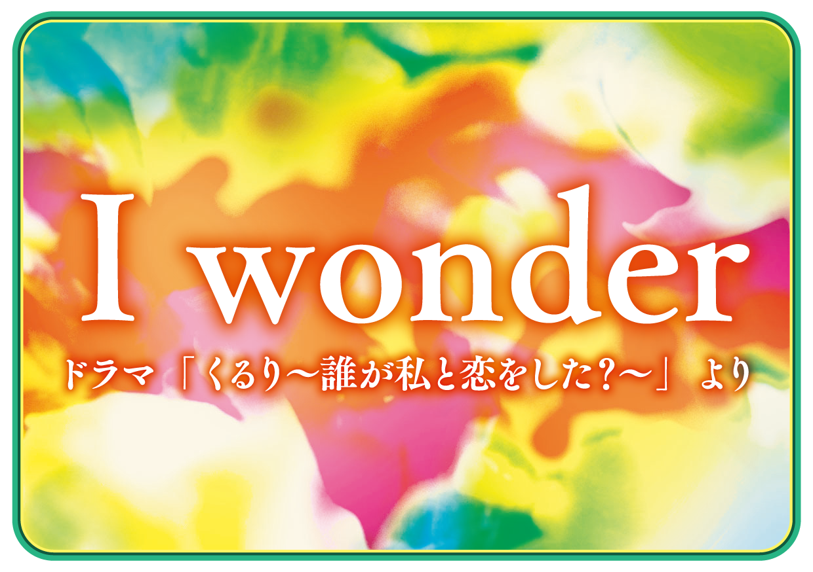
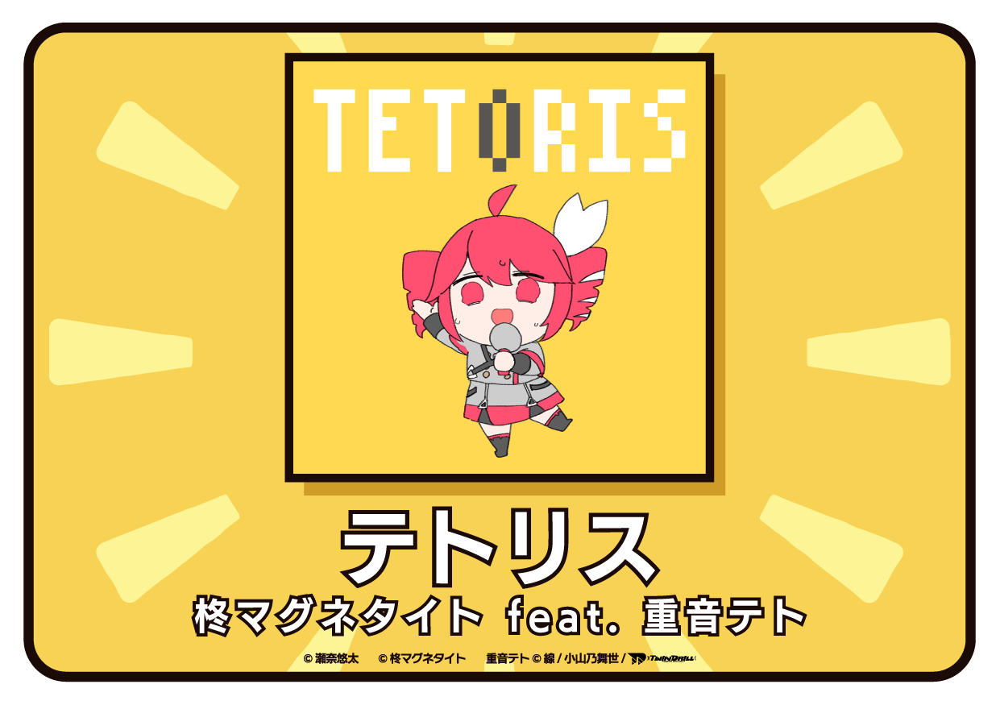
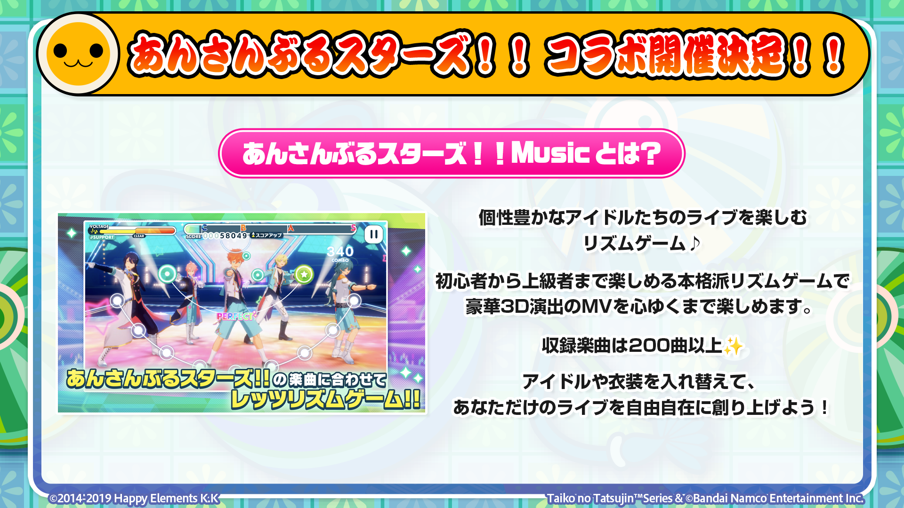
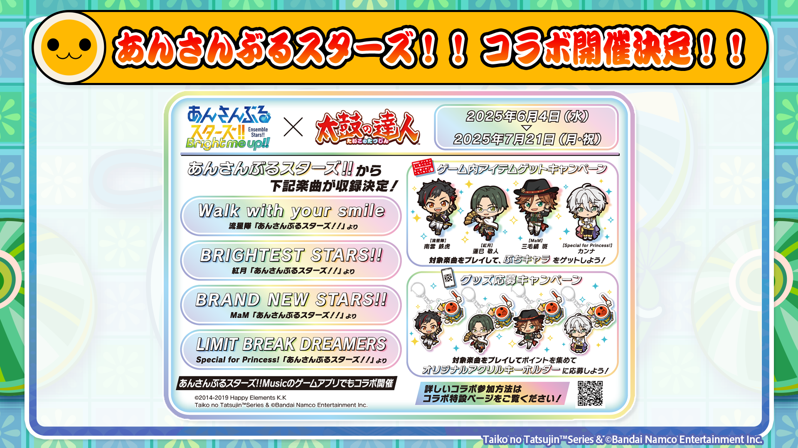
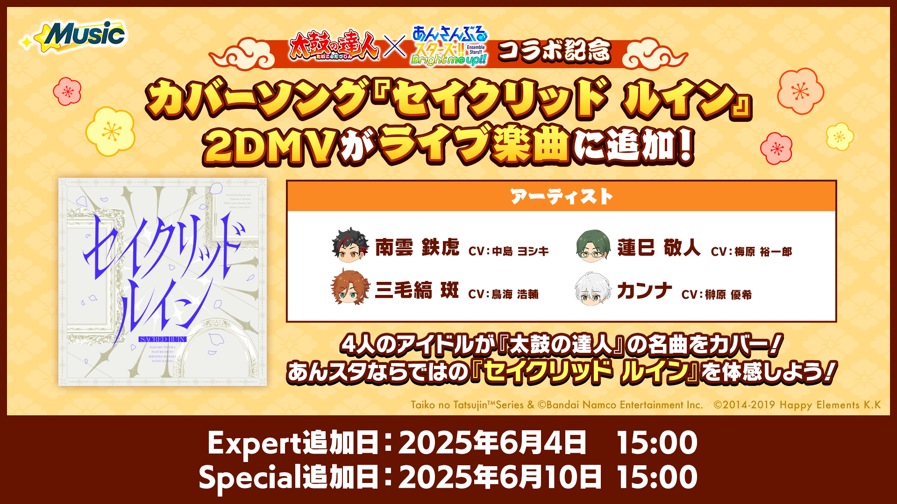
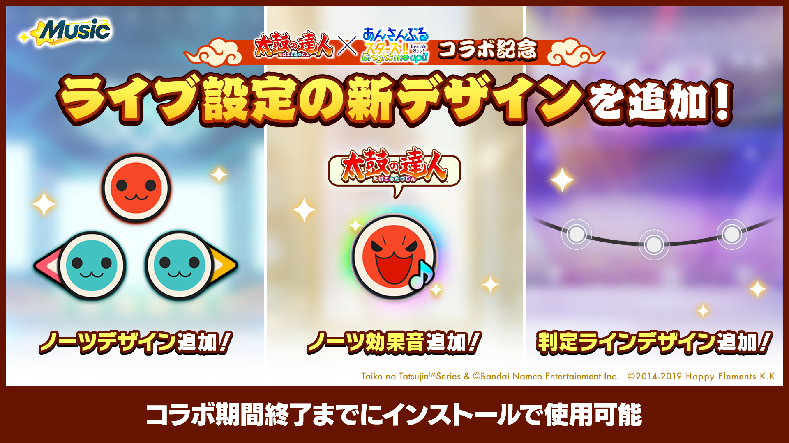
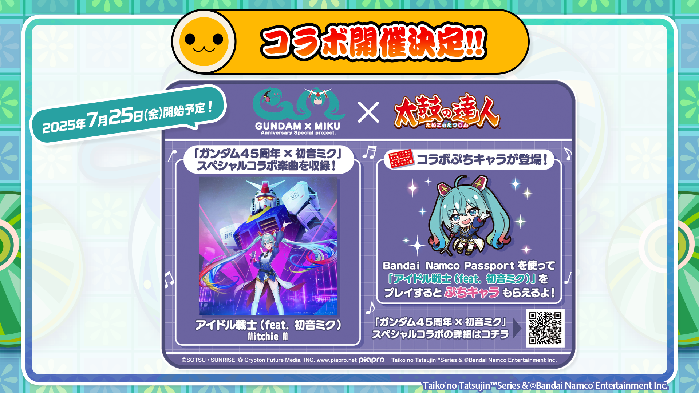
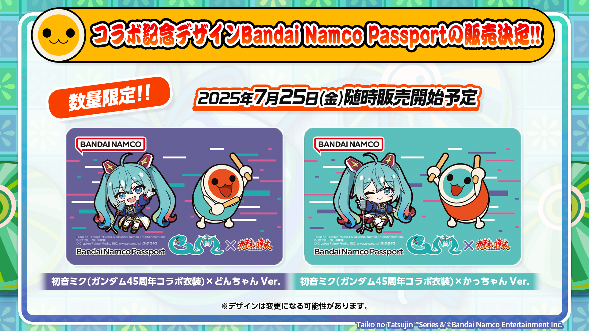
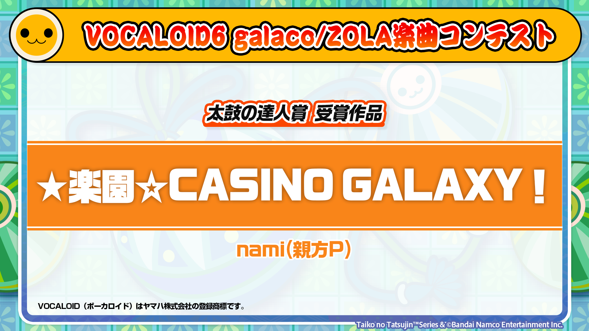

2025年06月04日
2025/6/12（木) 太鼓の達人 ニジイロ ブログ Ver. アップデートのお知らせ
みなさん、こんにちは！
お知らせ担当の１１号です。
梅雨の気配も感じる今日この頃、じりじりと蒸し暑くなってきましたね～。
…ということで私、新ガジェット「リュックサックの背中冷却ファン」を導入しました☆彡
リュックと背中の間に汗をかいてシャツべったり。。。
この夏は、そんな気持ち悪さとさよならバイバイ♪
ソーラーパネルつきリュックサックで発電して、涼しさの永久機関が完成だぜっ！！
ワクワクした気持ちで、お知らせスタート！

アップデート日から遊べる新曲はコチラ！！
.
▼ ポップス ▼
I wonder ／ ドラマ「くるり～誰が私と恋をした？～」より
テトリス ／ 柊マグネタイト feat. 重音テト
.


.
※ 日本版以外へは後日の楽曲収録を予定しています。
.
.
さらに！！6/12(木)より、中国内地で先行収録していた以下の楽曲が【日本・ワールドワイド】で遊べるようになります！
ぜひプレイしてみてくださいね～♪
.
▼ ポップス ▼
王妃
淘汰
.
.
.
.
※ 一部の楽曲について、一部の国や地域のみで収録の場合があります。
お待たせしました！！【日本以外】で遊んでくれているドンだーの皆さんに朗報です！！
.
6月12日(木)以降に、これまで『日本以外へは、後日の楽曲収録を予定しています。』とお伝えしていた、以下の楽曲がプレイ可能になります！
.
※ 日本以外では店舗様での作業が必要です。店舗様によってプレイ可能となる日が異なる場合があります。
.
▼ ２０２５年６月12日（木）以降、店舗様にて作業完了後プレイ可能 ▼
.
・PEACEKEEPER ／ 「転生したらスライムだった件」より
・Storyteller ／ 「転生したらスライムだった件」より
プレイしたい楽曲はありましたカッ！？
様々なジャンルの人気楽曲が追加されるので、ぜひたくさんプレイしてみてくださいね♪
どうぞお楽しみに～～～！！
.
.
※ 国や地域によって、一部の楽曲は収録されない場合があります。
2025年7月24日(水)より、アークナイツの楽曲が【日本】で同時収録が決定しました！！
▼ゲームミュージック▼
Radiant ／ 「アークナイツ -明日方舟-」より
Break Through the Dome ／ 「アークナイツ -明日方舟-」より
中国大陸版のアークナイツに太鼓の達人コンテンツが収録されることをうけての楽曲収録となりました！！
どんな譜面になるのかワクワクしながらお待ちください！！
※ 日本版以外へは後日の楽曲収録を予定しています。
.
「あんさんぶるスターズ！！× 太鼓の達人」コラボキャンペーンが2025年6月12日(木)～2025年7月21日(月・祝)の期間で開催いたします！！
.
▼あんさんぶるスターズ！！Musicとは

.
コラボを記念して、あんさんぶるスターズ！！の楽曲4曲を収録します！
.
▼ゲームミュージック▼ 6/12(木)収録
Walk with your smile ／ 流星隊 「あんさんぶるスターズ！！」より
BRIGHTEST STARS!! ／ 紅月 「あんさんぶるスターズ！！」より
BRAND NEW STARS!! ／ MaM 「あんさんぶるスターズ！！」より
LIMIT BREAK DREAMERS ／ Special for Princess! 「あんさんぶるスターズ！！」より
.
コラボキャンペーンは日本のみです。
.
.
※ 日本版以外へは後日の楽曲収録を予定しています。
.

.
さらに！ぷちキャラがもらえるキャンペーンや、オリジナルアクリルキーホルダーが抽選で当たるキャンペーンも同時に開催！！
.
Bandai Namco Passportを使って、各ユニットの収録楽曲をプレイすると、歌唱しているユニットのメンバーのぷちキャラがゲットできます！
オリジナルアクリルキーホルダーは、いずれか1つを抽選で120名様にプレゼント！
こちらの抽選はBandai Namco Passportがなくても参加可能ですので、ぜひトライしてみてください♪
（アクリルキーホルダーの種類はお選びいただけませんので、ご了承ください）
.
.
ゲームアプリ『あんさんぶるスターズ！！Music』でも太鼓の達人コラボが開催！！
ぜひ、『あんさんぶるスターズ！！Music』もプレイしてみてくださいね♪
.


.
↓↓↓参加方法や詳しい情報は、コラボ特設ページをチェック↓↓↓
https://taiko.namco-ch.net/taiko/special/ensemble-stars
ガンダムシリーズ45周年を記念して、現在開催中の「ガンダム45周年×初音ミク」スペシャルコラボに、太鼓の達人(ゲームセンター版)も参加することが決定しました～～！！！
2025年7月25日(金)より開催予定です！
.

.
「ガンダム45周年×初音ミク」スペシャルコラボ楽曲を収録します♪
.
▼ボーカロイド™曲▼
アイドル戦士(feat. 初音ミク) ／ Mitchie M
.
ぷちキャラの獲得やBandai Namco Passportの販売は日本のみです。
.
.
※ 日本版以外へは後日の楽曲収録を予定しています。
※ VOCALOID（ボーカロイド）はヤマハ株式会社の登録商標です。
.
また、Bandai Namco Passportを使って、アイドル戦士(feat. 初音ミク)をプレイすると、初音ミク(ガンダム45周年コラボ衣装)ぷちキャラをゲットすることができます！！
.
さらに・・・！！
.

.
コラボ記念デザインBandai Namco Passportの販売が決定しました～～～！！
ぷちキャラをあしらったデザインがとってもキュート♡
数量限定で全国のアミューズメント施設等にて、7月25日(金)より随時販売予定です！！
キャンペーン開始間近に改めてお知らせしますので、楽しみにお待ちください☆彡
.
↓↓↓「ガンダム45周年×初音ミク」スペシャルコラボの公式サイトはコチラ↓↓↓
https://www.gundam.info/feature/g45th-hatsunemiku-collab/
2025年1月30日(木)～2025年3月30日(日)で開催された、VOCALOID アニバーサリー特別企画『VOCALOID6 galaco/ZOLA 楽曲コンテスト』の受賞作品が発表されました！！
.
さまざまな賞がある中で「太鼓の達人賞」に輝いた受賞作品はコチラ！！
.

.
nami(親方P)さん受賞おめでとうございます～～～！！（パチパチパチ～～！！！！）
「太鼓の達人賞」受賞作品は、太鼓の達人(ゲームセンター版)及び「太鼓の達人 ドンダフルフェスティバル」有料楽曲サブスクリプションサービス「太鼓ミュージックパス」にて収録予定です！！
収録日は、後日お知らせしますので、楽しみにお待ちください！
各受賞作品の発表＆試聴は下記サイトをチェックしてください☆彡
https://www.ssw.co.jp/products/galaco_zola2025/
※ 日本版以外へは後日の楽曲収録を予定しています。
.
どんメダルショップを「2025夏」にシーズン変更！
2025年6月12日(木)より【日本】で同時スタートです！！
.
↓↓↓ショップで獲得できるようになる楽曲はコチラ↓↓↓
.
▼ ナムコオリジナル ▼
SoulStone -闇喰イサァカス団- ／ 清風明月（Drop×葉月ゆら）
.
ミンナノカキゴオリ ／ ボンジュール鈴木 feat. 塚越雄一朗(NanosizeMir) ＆ 祇羽
.
Taiko Session ～Live Version～
.
.
段位道場2025の十段課題曲「SoulStone -闇喰イサァカス団-」がショップに登場！
各楽曲の試聴動画は、バンダイナムコ アミューズメントユニット公式チャンネルで順次公開予定です♪
.
.
.
.
※※ どんメダルショップのシーズン（季節）変更に伴う注意点 ※※
.
いままでのどんメダルショップのシーズン変更のルールと同じですが、注意のおさらいです。
.
・どんメダルショップ「２０２５夏」のごほうび獲得方法
.
２０２５/６/７から、あらためて「どんメダル」を獲得する必要があります。
ごほうび毎に設定された、必要な量の「どんメダル」と好きなごほうびを、交換することができます。
.
・現在所持されている「どんメダル」について
どんメダルショップ「２０２５春」の間に獲得していた「どんメダル」は、どんメダルショップ「２０２５夏」では、使えません。
所持中の、どんメダルショップ「２０２５春」のメダルは、６/７をもってリセットされます。
.
・既に獲得したごほうびについて
どんメダルショップ「２０２５春」で獲得されたごほうびは、今後も引き続きお楽しみいただけます。
.
・どんメダルショップ「２０２５春」で獲得できたごほうび曲について
どんメダルショップ「２０２５夏」でも引き続き交換可能です。
.
引き続き、こまめな手の消毒、手洗い・うがいなどなどで、衛生を保ちつつ、太鼓の達人をお楽しみください！
みんなで楽しく太鼓の達人をプレイしてくださいね♪